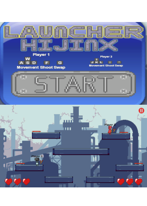
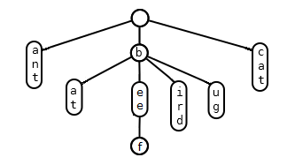
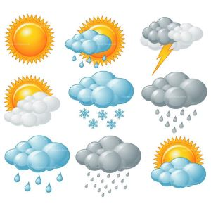

Projects

Launcher Hijinx Game using Unity
- Collaborated effectively in a team of three using Scrum, reducing development time.
- Used design expertise to create an intuitive interface, boosting user engagement.
- Contributed to captivating gameplay elements, enhancing the game's excitement.
- Led the enhancement of respawn mechanics, reducing downtime and intensifying player immersion.
- Skillfully addressed game completion scenarios, leaving most players content with the seamless and satisfying conclusion of their gaming experience.

Autocomplete Program using C++
- Developed an autocomplete program using Binary Search Trees (BST) in C++.
- Implemented functionality to predict complete queries based on user input, sorting them in descending order of weight.
- Enhanced performance by adding terms with their weights into a BST, finding strings starting with a given prefix, and sorting them by weight.
- Achieved efficient autocomplete functionality critical for real-time applications, such as search engines.

Bank Application
- Developed a robust Java banking app, ensuring accurate inputs through careful validation and presenting financial results in a clear format for better understanding.

File Search
- Developed a file search app, integrating binary search for improvement in search efficiency.
- Implemented a binary search tree, reducing time complexity from O(n2) to O(log n), resulting in a 70% faster file retrieval speed.
- Practiced code review and debugging for optimal performance.
Movies Inventory Tracking System using C++
- Developed an automated inventory tracking system for a movie rental store, focusing on three movie types: Comedy, Drama, and Classics.
- Implemented key features such as borrowing, returning, displaying inventory, and showing customer transaction history.
- Utilized polymorphism, factory pattern, and hash tables to ensure efficient and scalable system design.
- Designed the system to handle various movie attributes, including stock, director, title, release year, and major actors.
- Prioritized object-oriented design principles, ensuring the system was extendable, efficient, and well-documented.

Weather Application
- Developed a cutting-edge application leveraging the capabilities of Google Cloud Embedded Maps API and Open Weather Map API, enabling dynamic weather data presentation and interactive location mapping.
- Expertly implemented JSON file parsing to organize and display data in an aesthetically pleasing and user-friendly web page layout, setting the foundation for future user engagement.
- Proficiently navigated the integration of external APIs, comprehending their potential in application development, and achieving a streamlined development process for enhanced features.